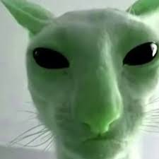
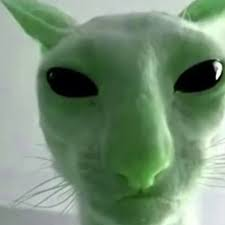
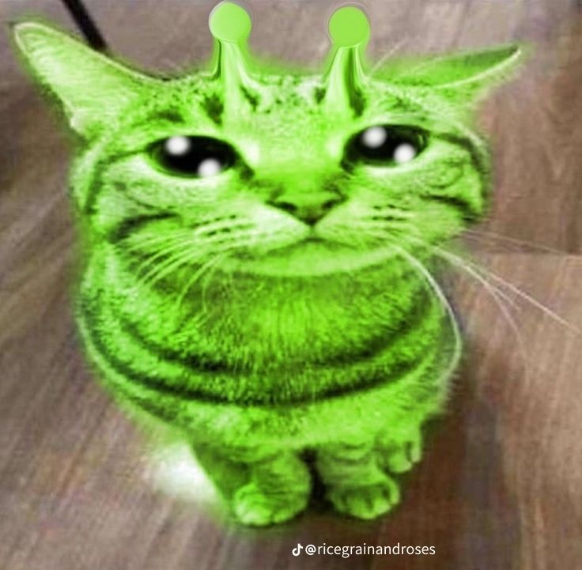
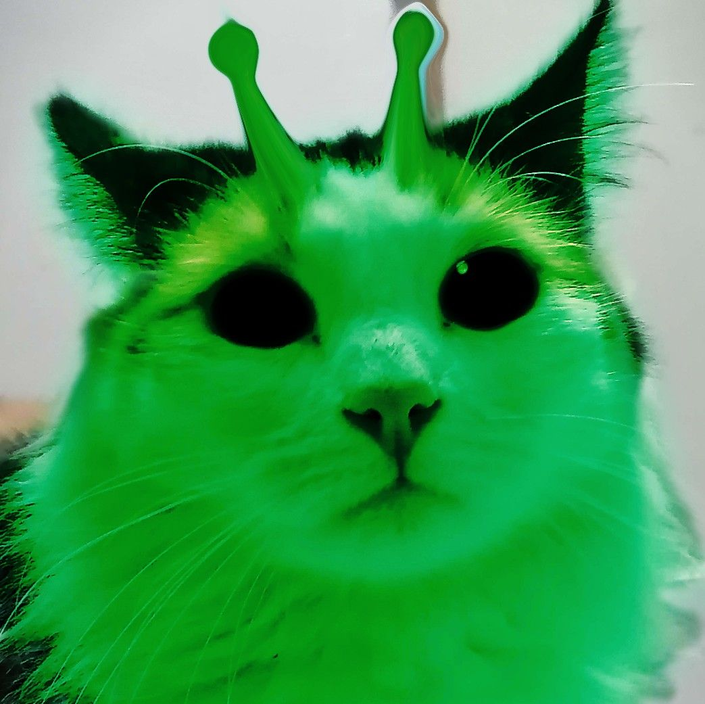
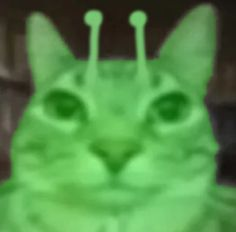
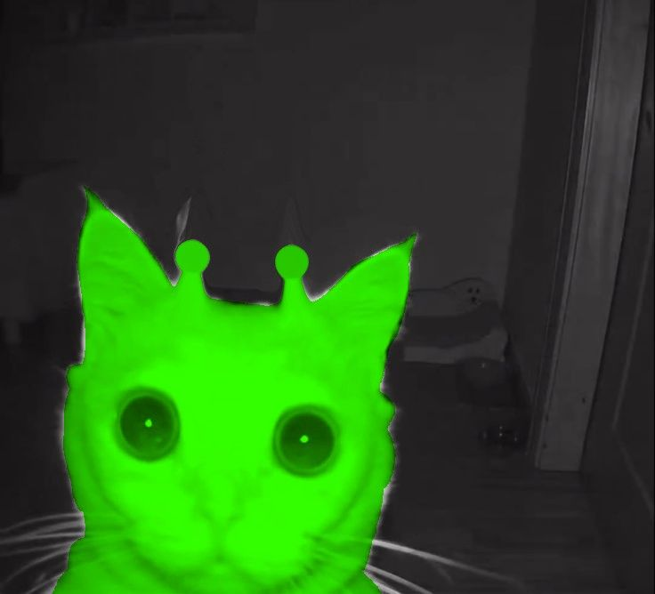
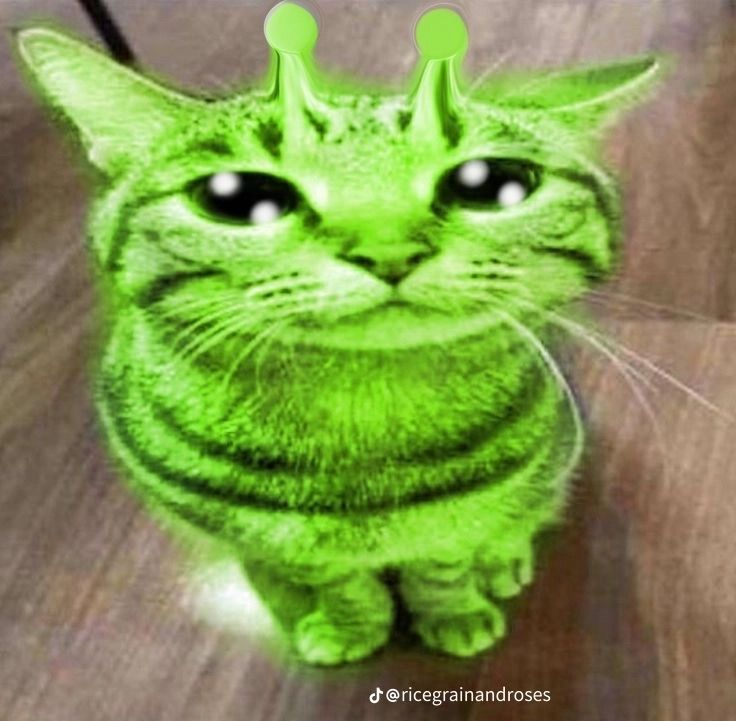
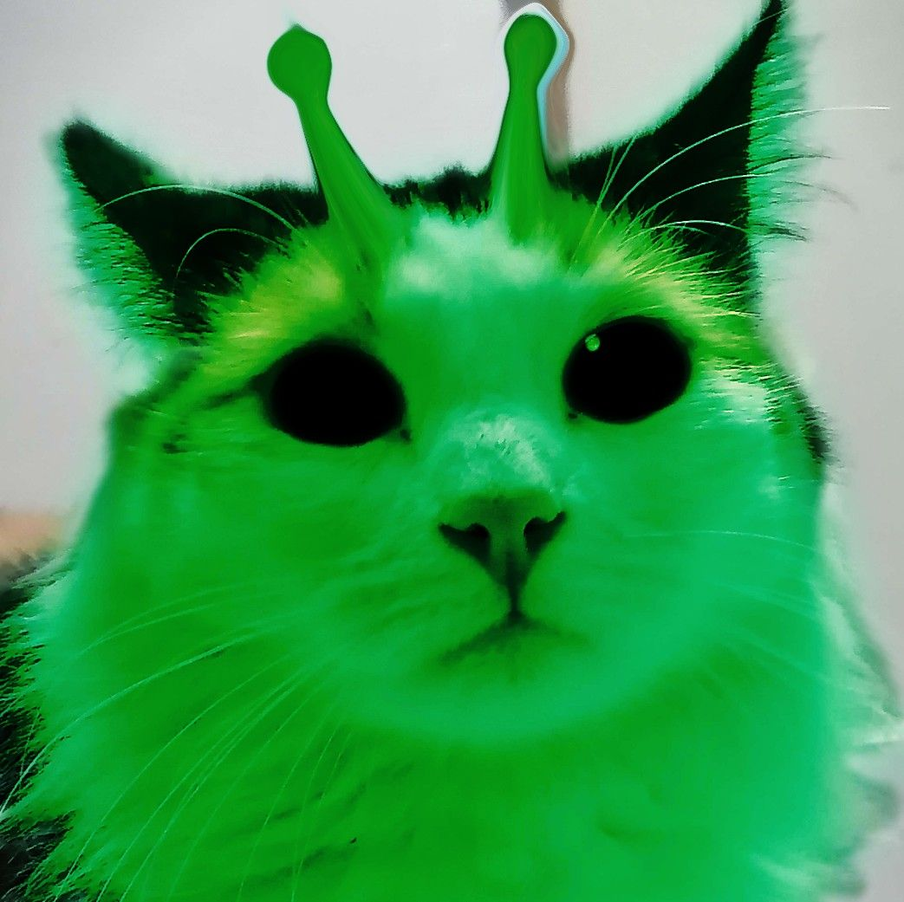
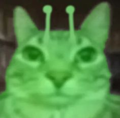
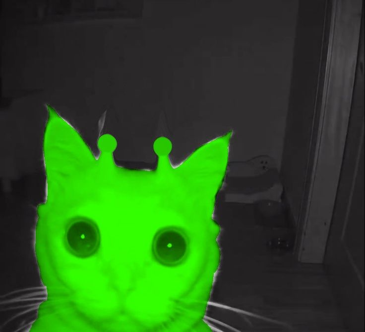

Reptilianie Rządzą Światem
Czy kiedykolwiek zastanawiałeś się, dlaczego świat jest taki, jaki jest? Według teorii spiskowych, wiele wpływowych osób to tak naprawdę Reptilianie – tajemnicza rasa zmiennokształtnych kosmitów, którzy kontrolują ludzkość od tysięcy lat.
Czy to tylko fikcja, czy może prawda ukrywana przez elity?
Chemtrails - Sekretne Opryski?
Smugi pozostawiane przez samoloty to temat gorących dyskusji. Niektórzy wierzą, że są to nie tylko zwykłe spaliny, ale chemikalia używane do manipulacji pogodą, zdrowiem czy nawet umysłami ludzi. Czy chemtrails to realne zagrożenie, czy
zwykły mit? Sprawdź sam!
Projekt HAARP – Kontrola Pogody
Czy globalne katastrofy pogodowe to tylko przypadek? Według niektórych teorii, tajny projekt HAARP (High-Frequency Active Auroral Research Program) służy do manipulacji atmosferą. Trzęsienia ziemi, huragany, susze – wszystko to mogłoby
być wynikiem eksperymentów naukowych, które wymknęły się spod kontroli. Czy HAARP to tylko badania naukowe, czy potężna broń pogodowa?
Lądowanie na Księżycu – Wielki Oszustwo?
Czy Neil Armstrong naprawdę postawił stopę na Księżycu? Zwolennicy teorii spiskowych twierdzą, że słynne lądowanie z 1969 roku zostało sfałszowane przez NASA. Sztuczne tło, podejrzane cienie, brak gwiazd na zdjęciach – czy to wszystko
wskazuje na wielką mistyfikację? A może to próba odwrócenia uwagi od prawdziwych tajemnic kosmosu?
Nowy Porządek Świata – Kto Pociąga za Sznurki?
Czy światem naprawdę rządzi niewidzialna elita? Teoria spiskowa o Nowym Porządku Świata mówi o tajnym rządzie globalnym, który dąży do kontroli ludzkości. Od chipów śledzących po manipulacje finansowe – czy nasze życie jest kontrolowane
bardziej, niż nam się wydaje? Kto stoi za kulisami tej globalnej gry?
Area 51 – Co Kryje Rząd?
Tajemnicza baza wojskowa w Nevadzie od lat budzi kontrowersje. Czy przechowywane są tam wraki UFO? Czy pracują tam naukowcy nad technologią obcych? Rząd USA milczy na temat działań w Strefie 51, co tylko podsyca spekulacje. A może to miejsce
jest tylko zasłoną dymną dla czegoś jeszcze bardziej tajemniczego?
 

 






